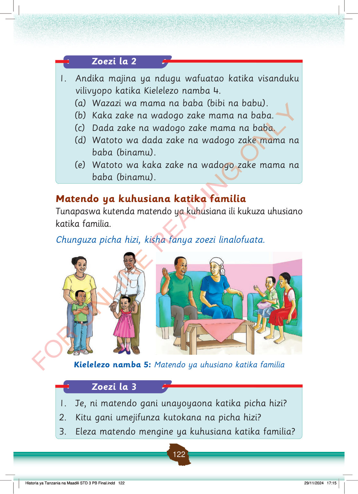

Zoezi la 2
1.
Andika majina ya ndugu wafuatao katika visanduku vilivyopo katika Kielelezo namba 4.
(a) Wazazi wa mama na baba (bibi na babu).
(b) Kaka zake na wadogo zake mama na baba.
(c) Dada zake na wadogo zake mama na baba.
(d) Watoto wa dada zake na wadogo zake mama na baba (binamu).
(e) Watoto wa kaka zake na wadogo zake mama na baba (binamu).
Matendo ya kuhusiana katika familia
Tunapaswa kutenda matendo ya kuhusiana ili kukuza uhusiano katika familia.
Chunguza picha hizi, kisha fanya zoezi linalofuata.
Mama na baba wamesimama pamoja na watoto wao wawili. Kila mzazi yuko karibu na mtoto wake.
Familia imekaa sebuleni na kuzungumza kwa furaha. Wazazi na watoto wanasikilizana na kushirikiana.
Kielelezo namba 5:
Matendo ya uhusiano katika familia
Zoezi la 3
1.
Je, ni matendo gani unayoyaona katika picha hizi?
2.
Kitu gani umejifunza kutokana na picha hizi?
3.
Eleza matendo mengine ya kuhusiana katika familia?